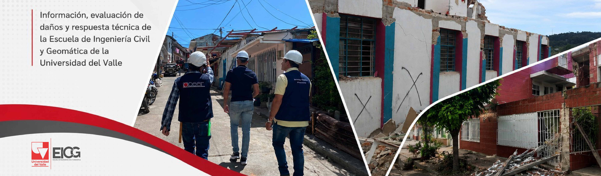

Información sobre el sismo
Informacion, evaluacion de da;os y respuesta tecnica de la Escuela de Ingenieria Civil Y Geomatica de la Universidad del Valle
El sismo del 10 de agosto
El 10 de agosto de 2026, Colombia vivió uno de los eventos sísmicos más importantes de las últimas décadas. A las 7:34 a. m., un sismo de magnitud 7,4, con epicentro en inmediaciones de San José del Palmar, Chocó, y una profundidad de 103 kilómetros, fue sentido con fuerza en amplias zonas del país. El movimiento generó afectaciones en diferentes departamentos y puso nuevamente en evidencia la importancia de conocer el comportamiento de las edificaciones frente a la amenaza sísmica y de fortalecer las capacidades de respuesta ante este tipo de emergencias. El Servicio Geológico Colombiano señaló que las estaciones cercanas al epicentro registraron entre 90 segundos y dos minutos de movimiento.
El Valle del Cauca fue uno de los territorios donde el sismo tuvo importantes efectos. En Cali y en diferentes municipios del departamento se reportaron daños en edificaciones, viviendas e infraestructura, además de situaciones que requirieron la valoración técnica de las condiciones de seguridad de las estructuras. La magnitud del evento y su amplia percepción hicieron necesaria una respuesta que, además de la atención de la emergencia, permitiera identificar y documentar las afectaciones ocasionadas por el movimiento. En este contexto, profesionales y miembros de la comunidad académica vinculados con la ingeniería civil participaron en labores de evaluación y reconocimiento de edificaciones afectadas.
Ante esta situación, la Escuela de Ingeniería Civil y Geomática de la Universidad del Valle se sumó a las labores de evaluación técnica mediante la participación voluntaria de ingenieros civiles, estudiantes de últimos semestres, estudiantes de posgrado y egresados. Los equipos realizaron visitas a edificaciones de Cali y a estructuras ubicadas en diferentes municipios del Valle del Cauca, con el propósito de observar, registrar y documentar las condiciones encontradas después del sismo. Este espacio reúne los informes y registros generados durante estas actividades, como una contribución al conocimiento de los efectos del evento y a la construcción de memoria técnica sobre lo ocurrido en el departamento.
Evaluación de edificaciones después del sismo
Luego del sismo del 10 de agosto, profesionales, estudiantes y egresados de la Escuela de Ingeniería Civil y Geomática participaron voluntariamente en jornadas de reconocimiento y evaluación de edificaciones afectadas en Cali y diferentes municipios del Valle del Cauca.
Estas visitas permitieron realizar observaciones en campo, registrar daños y recopilar información sobre las condiciones encontradas en las estructuras. Los informes elaborados durante estas jornadas constituyen un registro técnico de las afectaciones observadas y hacen parte de la contribución de la comunidad de la EICG frente a la emergencia.